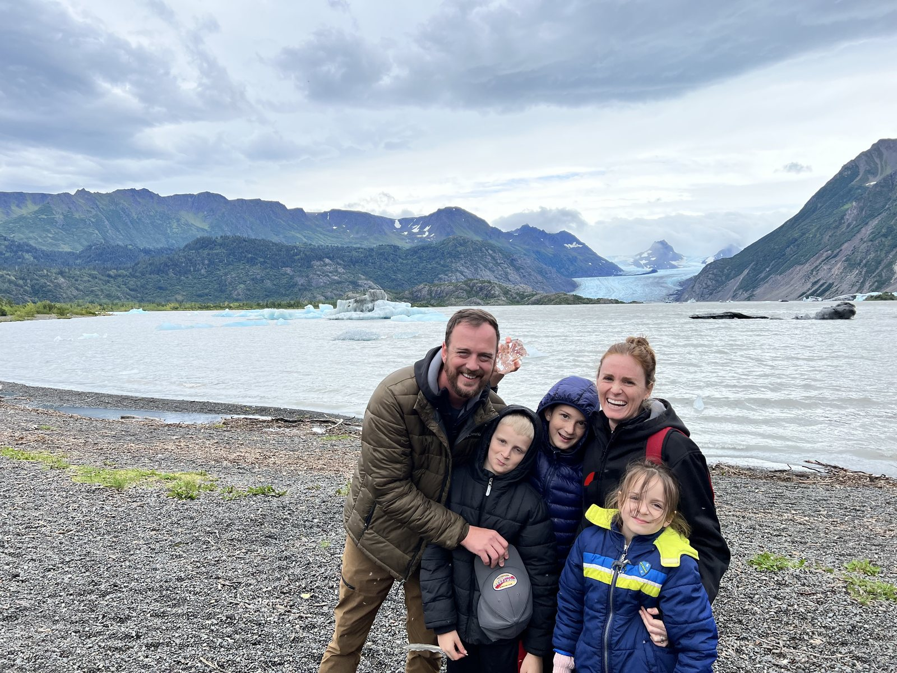

Enter Royals
The Accelerator is twelve weekly calls across 90 days for founders, coaches, and leaders ready to build freedom, face what keeps returning, and decide what they want the success to become.
See Royals
The companies produced millions. I had a wife I loved, three children, a house on a lake, airplanes, motorcycles, and a life that looked like freedom from the outside. I was exhausted, less present than I wanted to be, and still believing the next level of success would finally settle something inside me.
His death did not change me cleanly or all at once. I kept the pace and the beliefs that had carried me there, even while some part of me knew I could not keep calling the life I was living success.
I wanted to know my children as they grew. I wanted more laughter and dancing with my Bride. I wanted the mission inside the companies to continue without requiring the rest of my life as fuel.

I knew how to solve problems, move faster, and take responsibility when somebody else dropped it. It worked, which meant the companies grew while becoming more dependent on me.
I began looking at the fear beneath the urgency, the state behind the decision, the role that had outgrown its owner, and the systems quietly teaching everyone to bring the problem back to me. I still care about revenue, ownership, and strategy. I also care whether the founder can leave without the company stalling, be present with the people they love, and recognize the life the work is creating.
I built several ways into the work because the first honest step is not always hiring a coach. Sometimes it is seeing the pattern clearly enough to decide what kind of support would actually be useful.
The Accelerator is twelve weekly calls across 90 days for founders, coaches, and leaders ready to build freedom, face what keeps returning, and decide what they want the success to become.
See RoyalsPrivate coaching is for the season that will not stay inside one category. The company, marriage, body, identity, fear, and decision can all come into the same conversation.
See private coachingI speak and facilitate for companies, communities, conferences, and leadership rooms carrying a question that deserves more than another polished presentation.
Speaking and facilitation“Business grew 53% in 3 months, but I grew 153% as a person. Since working with Eric, my income has more than doubled in 90 days. The real transformation was how I started showing up for myself, with clarity, confidence, and alignment.”
Cassie Shea · Coach
“Working with Eric honestly changed everything for me. He helped me see my self-worth without needing constant external validation, and that shift has impacted every part of my life.”
Dez Loessberg · Investor & Founder
“I always enjoy going on this journey with you as a guide and resource. I would be lost without you. I have no idea how you figured this all out, but it is changing my life.”
James Wagoner · Founder
The books, essays, talks, and rooms come from the same place. They hold what I have learned through companies, family, grief, fear, recovery, adventure, relationships, and the life I am still learning to live.
I do not believe my experience becomes another person's instruction simply because I wrote it down. I can share what I have seen, the choices I made, and what happened next. The reader or the room decides what belongs to them.

I write about building, fear, family, leadership, adventure, and the work of being here for the life I said I wanted. The form below is only for that writing.
Unsubscribe whenever it stops being useful.